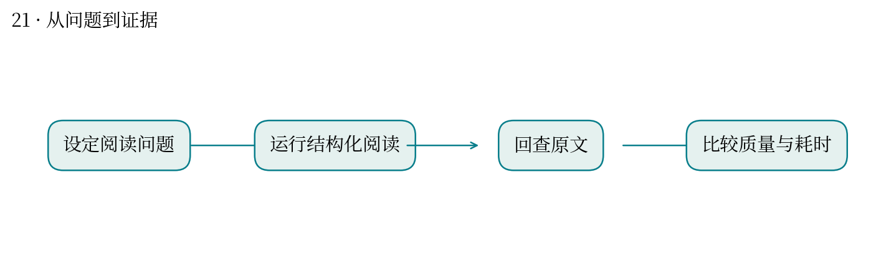
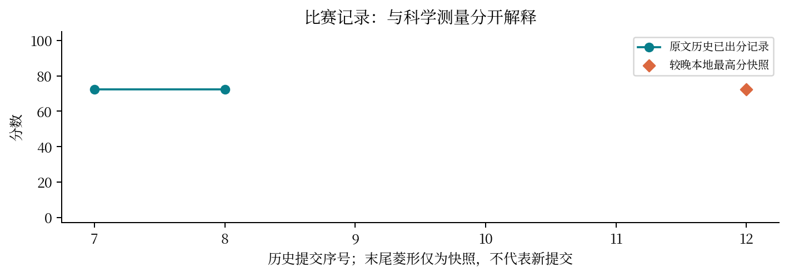

论文阅读工具，能否在不牺牲可靠性的前提下省时间？
最高分快照：72.5 · 2026-10-12T01:11:24+08:00
Skill 把读论文的步骤变成可重复流程：问题、方法、实验条件、结论与证据定位。评价要同时看质量与耗时。
进行 v1–v7 多轮实验和 7 场独立运行，加入官方结构检查并记录前后比较。
旧总结明确质量达标但没有稳定提速；较晚本地快照为 72.5。报告保留这一负结果。
更短的答案不一定省下总工作时间；用户返工、补查原文也应计入成本。
直接对应你读基因组论文及开发教学工具：工具效果应通过真实任务验证，不能用功能数量代替效果。
缺少充分配对样本时，不能宣称稳定加速；后续应使用同论文、同问题、同验收要求的对照。


| attempt | 提交时间 | 分数 | 状态 |
|---|---|---|---|
| 53415 | 10-11 09:41:10 | — | 失败 |
| 53555 | 10-11 10:35:58 | — | 失败 |
| 53619 | 10-11 10:44:21 | — | 失败 |
| 53650 | 10-11 10:49:24 | — | 失败 |
| 53653 | 10-11 10:49:57 | — | 失败 |
| 54526 | 10-11 15:42:14 | — | 失败 |
| 54702 | 10-11 16:34:01 | 72.5 | 已出分 |
| 54961 | 10-11 17:37:30 | 72.5 | 已出分 |
| 54974 | 10-11 17:39:55 | — | 失败 |
| 55136 | 10-11 18:13:38 | — | 失败 |
| 55137 | 10-11 18:14:05 | — | 失败 |
源文件 SHA256 见 证据清单；用 scripts/build.py 重建图表。